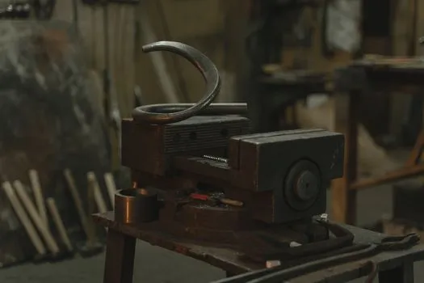
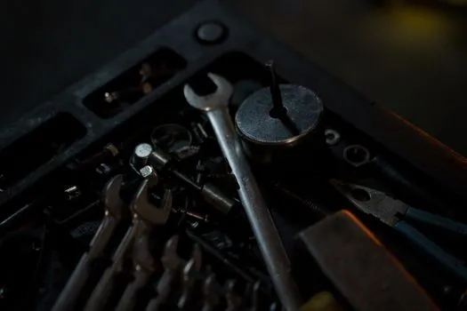
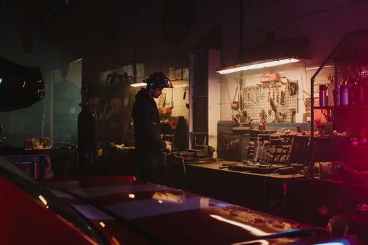
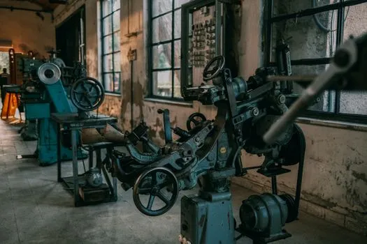

5845903Close-up of metalwork equipment in an industrial workshop setting.

5845903Close-up of metalwork equipment in an industrial workshop setting.

7019373A detailed view of assorted tools and wrenches in a dimly lit workshop environment.

4488639Mechanic working in a dimly lit garage workshop surrounded by tools and equipment.

30335372Old industrial machines in an abandoned workshop with vintage tools and equipment.